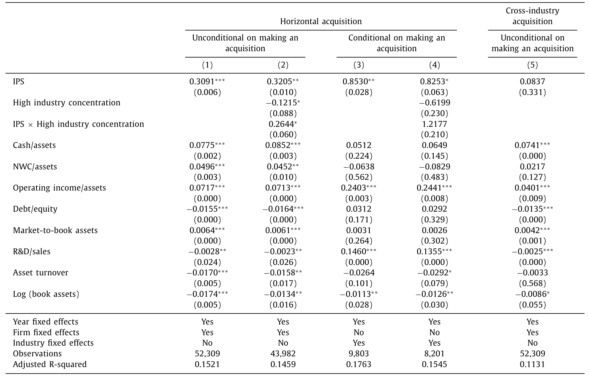
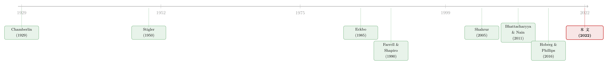

并购是为了把饼做大，还是把价抬高？——答案藏在「产品像不像」里
本文读的是 Fathollahi, Harford & Klasa (2022, JFE)：作者用 10-K 业务描述的文本相似度造出一个「行业产品相似度（IPS）」指标，证明当一个行业产品越同质、又越集中时，公司越爱发起横向并购，且并购给收购方、对手都带来更正的公告收益、给目标更高的溢价、推高上下游的成本、也更容易被反垄断当局盯上——换句话说，这类并购的真实动机，常常就是「降低竞争、抬高价格」。
1 一个被吵了七十年的老问题
横向并购（horizontal acquisition）——两家做同一门生意的公司合到一起——到底是好事还是坏事？
从 Stigler (1950) 那篇只有十二页的小文章算起，经济学家就一直在为这件事吵。理论上的答案干净利落：把同行买下来，行业里的竞争对手少了一个，剩下的人更容易心照不宣地一起把产量压住、把价格抬上去；于是合并双方赚钱，连旁观的同行也跟着沾光，唯独消费者和上下游吃亏。这套逻辑被反垄断当局奉为圭臬，写进了一代又一代的并购审查指南。
可一旦把这套漂亮的故事拿到数据里检验，麻烦就来了。
Eckbo (1983, 1985)、Fee and Thomas (2004)、Shahrur (2005) 这些研究横向并购公告收益的经典文章，反复得到一个让理论尴尬的结论：看不出在押的行业里，幸存者们的市场势力（market power）真的提高了。换个行业看也一样——航空、有线电视、银行，Kim and Singal (1993)、Chipty and Snyder (1999)、Sapienza (2002) 给出的结论彼此打架，有的说涨价了，有的说没有。
于是问题就僵在这里：理论说横向并购会减少竞争，证据却「至多算是喜忧参半」。是理论错了，还是我们一直没找对地方看？
本文的回答，藏在一个被绝大多数实证文献忽略掉的维度里——产品像不像。
2 为什么「集中度」单独看不出名堂
先把既有文献的盲点说透。
过去衡量「一次并购会不会反竞争」，几乎都盯着一个东西：行业集中度（industry concentration），比如赫芬达尔指数或四企业集中率。集中度越高，按市场集中度学说（market concentration doctrine），并购越危险。
但产业组织的理论早就提醒过：集中度这把尺，只在产品同质时才准。
理由其实很朴素。如果一个行业里大家卖的东西差不多（commodity-based），那么竞争是「全行业对全行业」的——任何一家降价，所有人都得跟，于是少掉一个对手、提高集中度，确实能让剩下的人更容易合谋（collusion）。可如果产品是高度差异化的（differentiated），竞争就被「局部化」了：每家公司其实只跟生产最接近替代品的那一两个对手贴身肉搏（Hotelling, 1929；Lancaster, 1966）。这时候你数整个行业有几家公司、集中度多高，根本说明不了「这次合并会不会让某个细分市场涨价」。
这不是学究的吹毛求疵。美国司法部（DOJ）和联邦贸易委员会（FTC）自己就是这么想的。1992 和 2010 两版《横向并购指南》白纸黑字地写着：当行业产品更同质、更标准化时，并购才更该受额外审查；而对差异化产品的行业，应当少看集中率（Shapiro, 2010）。Farrell and Shapiro (2010) 说得更直接——用集中度去预测差异化行业里的并购后果，「既笨拙又不准」。
理论和监管者都在喊「要看产品像不像」，可实证文献几乎全在单看集中度。这中间的缝隙，正是本文的切入口。
接着，一个自然的问题是：既然「产品相似度」这么关键，为什么没人把它放进回归里？答案很现实——没人造得出这把尺。怎么量化「一个行业里的公司，产品到底有多像」？这正是本文要先解决的工程问题。
3 关键一步：把「产品像不像」从年报里读出来
本文真正的方法论贡献，是构造了一个叫行业产品相似度（Industry Product Similarity, IPS）的指标。
它的思路很妙，是「两条腿走路」。第一条腿是 SIC 行业代码——同一个三位数 SIC 行业里的公司，至少生产工艺是相似的。第二条腿借自 Hoberg and Phillips (2016) 开创的文本分析（textual analysis）：把每家公司 10-K 年报里那段「业务描述」拆成词频向量，两家公司用词越重叠，说明产品特征越接近。
把两者结合，IPS 的算法是这样的：
这里有个细节值得停一下：作者特意是按三位数 SIC 行业来算 IPS，而不是直接用 Hoberg-Phillips 那种「文本自定义行业」。为什么？因为后续检验要用到美国劳工统计局按 NAICS 编制的生产者价格指数、用投入产出表识别上下游行业，这些都必须能和 SIC 代码对得上；而文本自定义行业没法和 NAICS 或 SIC 互相映射。一个看似技术性的选择，其实是为了让整篇文章的因果链条能闭合。
那么，IPS 这把新尺，量得准吗？
作者做了一组漂亮的验证（validation）。直觉是：如果一个行业产品真的更像，那么需求冲击会同样地打到每家公司身上，于是行业内公司的销售相关性、投资相关性都该更高。数据印证了这一点——IPS 与销售/投资相关性显著正相关，也与 Parrino (1997) 那个经典的行业同质性指标正相关。更关键的是，IPS 越高，行业里公司的价格-成本加成（price-cost margin）平均而言越低——这恰恰说明产品越像、价格竞争越惨烈。
注意这里的微妙之处：产品相似，平时意味着更激烈的价格战（加成更低）；可一旦发生并购、少掉一个对手，正因为「要合谋的维度更少」，反而更容易把价格协调上去（Stigler, 1964；Posner, 1976）。同一个相似度，平时是诅咒，并购后却成了筹码——这是全文的张力所在。
4 识别策略：用 IPS 把「降低竞争假说」逐项验过去
有了 IPS，本文的实证设计就清晰了。它的核心预测（competition reduction hypothesis）可以一句话概括：
当 IPS 和集中度同时高的时候，横向并购最可能减少竞争、抬高价格。
「集中」怎么定义？作者follow Eckbo (1985)：用美国人口普查局的四企业集中率，把销售份额最大的四家公司合计份额 ≥ 60% 的行业，定为「集中行业」——这大约对应集中度最高的那一个十分位（top decile），也正好是 DOJ/FTC 真会去审查的那一档。
样本是 1996–2015 年美国三位数 SIC 行业里、由上市公司发起、目标为上市或非上市公司的横向并购。
接下来，作者像剥洋葱一样，一层层把「降低竞争假说」的每个可观测含义都拿数据验了一遍：
第一层，并购决策。 IPS 越高，一家公司在某一年发起横向并购的无条件概率越大，完成的交易也越可能是横向的；而且——尽管集中行业里可买的标的本就更少——这个效应在集中行业里反而更强。作为安慰剂对照，IPS 对「跨行业并购」的概率毫无影响。这一步很要紧：如果 IPS 只是某种「并购热度」的代理变量，它就不该对横向、跨行业并购区别对待。

Table 2: provides evidence regarding the impact of IPS
第二层，谁赚了钱。 IPS 越高，收购方和同行（rival）的并购公告收益都越正，而且这效应完全由集中行业里的交易驱动。进一步，作者顺着「需求弹性」做了个加码检验：下游客户行业对该行业产出越依赖，意味着上游产品的需求越缺乏弹性、合谋的预期利润越高（Pindyck, 1979；Green and Porter, 1984；Levenstein and Suslow, 2006）。果然，IPS 抬高收购方公告收益的程度，随这种依赖度上升而上升。
第三层，目标和溢价。 在标的为上市公司的子样本里，集中行业中 IPS 越高，目标公司拿到的收购溢价（offer premium）和合并双方的合并财富增益（combined wealth gains）都越大——市场势力创造得越多，目标越有底气分一杯羹。
第四层，受害者。 如果故事属实，并购抬了价、又让收购方有本钱去压榨供应商，那么下游客户和上游供应商就该遭殃。数据正是如此：在集中行业的横向并购中，IPS 越高，依赖性客户和供应商公司的公告收益越负。
第五层，监管者。 最后，IPS 越高，这桩并购被 FTC 或 DOJ 挑战（challenge）的概率越大；并且当行业越集中、上下游越依赖、收购方/同行公告收益越高、合并财富增益越大时，这个概率进一步上升。换句话说，连反垄断当局都「看见」了这些并购的反竞争潜力——市场和监管者，给出了同一个答案。
把这五层叠起来，一条完整的因果链就立住了：产品像 + 行业集中 → 更爱并购 → 收购方与同行受益、目标拿溢价 → 上下游受损、价格上涨 → 监管者出手。每一环都指向同一个机制：降低竞争、抬高价格，而非「提升效率、降低成本」。作者特意检验了「协同来自费用下降」这条对立解释，只找到很有限的证据——再一次把矛头指回了涨价。
5 于是反转出现：单看集中度，什么都看不出来
文章最精彩的一笔，留在了最后。
作者把过去几十年文献的做法复刻了一遍——只看集中度、不看产品相似度，去解释同样这批被解释变量。结果呢？集中度自己，对「横向并购是否提高了在押者的市场势力」这件事，没有任何支持性证据。
这就一举解释了开篇那个七十年的悬案：为什么前人得到的结论喜忧参半？因为他们手里只有「集中度」这半把尺。产品同质时这把尺管用，产品差异化时它失灵，把两类行业混在一起回归，正负相抵，自然得出「至多喜忧参半」的糊涂账。
为了把这一点钉死，作者还做了一组异质性检验：降低竞争假说的证据，在以大宗商品为主的行业（commodity-based）里更强，在以知识产权为核心的行业（IP-focused）里更弱（Blundell et al., 1999；Bloom et al., 2016）。这完全符合理论——差异化产品行业里，竞争是局部的，整体集中度本就不该说明问题。
至此，全文的核心贡献水落石出：不是横向并购到底反不反竞争，而是「在什么样的行业里」反竞争。产品相似度，正是那个被遗漏了几十年的调节变量。
6 文献脉络
这条研究的来路，可以拎出一条清晰的主线。
最早是 Chamberlin (1929) 与 Stigler (1950, 1964)：前者指出寡头会意识到彼此决策的相互依赖、从而可能默契地把价格抬到垄断水平，后者直接论证了横向合并能降低竞争、且在产品同质、行业集中时尤其有效。理论上的「弹药」由 Perry and Porter (1985) 和 Farrell and Shapiro (1990) 在 Cournot 框架里补足：同质产品的集中行业里，合并会压低合并方的总产量、推高行业价格。

接着是实证的几十年拉锯。Eckbo (1983, 1985) 用资本市场的财富效应去检验「市场势力学说」，开创了「看公告收益猜动机」的范式；Fee and Thomas (2004)、Shahrur (2005) 把视野扩展到供应商、客户、同行的反应；Bhattacharyya and Nain (2011) 则发现横向并购确实抬高了合并方相对供应商的买方势力。但这一脉的尴尬始终在于：直接看「市场势力是否提高」，证据总是不够硬。
真正的方法论转折来自 Hoberg and Phillips (2010, 2016)——他们用 10-K 文本把「产品相似度」量化了出来，证明两家公司产品越像，越可能合并、合并收益也越大。本文站在这个肩膀上，把「公司对公司」的相似度，提升为「整个行业」的相似度（IPS），并据此重新审视了那个老问题。这条「从理论预测、到资本市场检验、再到文本测度」的演进，本文恰好补上了「行业层面产品同质性」这块缺失的拼图。
（关于反垄断与合谋如何渗进公司的微观决策，可参见《把「合谋」写进高管的工资条：当反垄断的门悄悄关上》；关于并购中「同类」的识别与估值，可参见《替你估值的人，正在替你「挑」对手》 与《并购不只是换老板：它是技术「搬运工」，也是不平等的「放大器」》。）
7 评论与延伸（Q&A + 研究方向）
(a) 几个可能的疑问
Q：IPS 和 Hoberg-Phillips 的「产品相似度」到底差在哪？
Hoberg-Phillips 量的是「公司 i 和公司 j」这一对的相似度，用于研究两家具体公司会不会合并、合并能创造多少协同。本文的 IPS 是把整个三位数 SIC 行业内所有公司两两相似度做了平均，刻画的是「这个行业作为一个整体，产品有多同质」。前者是微观配对，后者是行业属性——而行业属性才是判断「一次并购会不会减少全行业竞争」的正确单位。
Q：IPS 高，平时本该意味着价格战更惨（加成更低），怎么并购后又成了涨价的帮凶，这不矛盾吗？
不矛盾，这恰恰是文章的精髓。产品越像，平时越没法靠差异化保护利润、价格竞争越激烈；但也正因为产品像、需要协调的维度少，一旦通过并购把对手数量减下来，剩下的人就更容易心照不宣地把价抬上去。相似度在「竞争」和「合谋」两种状态下作用相反，并购正是那个切换开关。
Q：识别可信吗？会不会是「好行业自己又集中又爱并购」的内生性？
这是本文最该被追问的地方，作者自己也坦白了局限：他们没有竞争强度的外生变化，也没有对上下游议价能力的外生冲击。能让人稍微放心的，是那组安慰剂——IPS 只影响横向并购、不影响跨行业并购；以及那条多重含义都一致的证据链（决策、收益、溢价、上下游受损、监管挑战全部指向同一机制）。但严格说，这仍是「相关性高度一致」，而非干净的因果识别。
Q：为什么用三位数 SIC，而不用更现代的文本自定义行业？
纯粹是为了让整条因果链能对上数据。后续要用 NAICS 口径的生产者价格指数、用投入产出表找上下游，这些都必须能和 SIC 互相映射，而文本自定义行业做不到。代价是 SIC 主要捕捉的是「生产工艺相似」，作者也承认这是个局限。
Q：这篇文章和「集中度无用论」是一回事吗？
不是。作者没说集中度没用，而是说集中度单独没用——它只在产品同质的行业里是好尺子。真正的信号是 IPS 与集中度的交互。这反而为反垄断当局「对同质行业额外审查」的现行做法提供了实证背书。
Q：「市场和监管者都看见了」，会不会只是事后正当化？
有这个风险。公告收益反映的是市场的事前预期，监管挑战发生在交易宣布之后，两者并不能直接证明涨价真的发生了。但作者还有一条更硬的证据：集中行业里 IPS 正向预测了并购后两年的实际产出价格变化——这是真金白银的价格，不只是预期。
(b) 几个可能的研究问题与提案
1. IPS 与公司债利差 - 【经济故事】如果高 IPS 的横向并购真的稳固了市场势力、平滑了现金流，那么合并方的违约风险应当下降、债券利差收窄；反过来，被挤压的上下游公司利差可能走阔。市场势力对股东是利好，对债权人同样是。 - 【可行性】高。用 TRACE 交易数据 + Mergent FISD 债券特征，把本文的并购样本对到发债主体上，做并购前后的利差变化事件研究，并用 IPS×集中度交互项识别。数据和方法都现成。
2. 外资持有人会约束反竞争并购吗？ - 【经济故事】外国机构投资者往往在多国持有同行业资产，他们对「全行业涨价」的偏好可能与本土股东不同；也可能因信息劣势而更难识别反竞争动机。外资持股比例会放大还是抑制 IPS 驱动的并购倾向，是个开放问题。 - 【可行性】中。用 FactSet/13F 与 Thomson 的国际持股数据匹配本文并购样本，识别上的难点在于外资持股本身的内生性，需要借助指数纳入或税收事件等外生冲击。
3. IPS 与公司债二级市场流动性 - 【经济故事】市场势力提高、现金流更可预测的行业，其债券的信息不对称和价格冲击可能更低，从而流动性更好；但并购也可能因债务结构重组而短期恶化流动性。两种力量孰强，值得拆开看。 - 【可行性】中。用 TRACE 计算 Roll、Amihud 等流动性指标，结合本文 IPS 做横截面与事件分析；难点是把「市场势力渠道」和「并购融资渠道」分离开。
4. 把 IPS 推到全球：贸易冲击下的行业同质性 - 【经济故事】Bloom et al. (2016) 已经证明中国进口冲击改变了创新与差异化。若进口竞争系统性地降低了一国行业的 IPS（逼着本土公司差异化求生），那么 IPS 本身就可能被贸易政策外生地推动——这或许能给本文补上一个缺失的外生变化来源。 - 【可行性】中-低。需要把 10-K 文本相似度按年份动态计算、再对接进口渗透率数据；构造工作量大，但能直接攻克本文「没有外生变化」的软肋。
8 我的判断
这是一篇「方法点亮老问题」的范例。它真正的贡献不在于又跑了一遍横向并购的财富效应回归，而在于把一个理论和监管者都念叨了几十年、却始终没人能量化的维度——产品相似度——做成了一把可操作的尺子，并用它把过去喜忧参半的文献一次性理顺。结论的内部一致性令人信服：从并购决策、到三方财富效应、到上下游受损、到真实价格上涨、再到监管挑战，五条证据链全部收敛到同一个机制上，这种「多重含义同时成立」的说服力，往往比单个干净系数更难造假。
但对识别的担忧也必须诚实地讲清楚。作者自己列出的三条局限——没有竞争强度的外生变化、没有上下游议价能力的外生冲击、SIC 代码主要只捕捉工艺相似——每一条都切中要害。说到底，IPS、集中度、并购倾向三者之间，仍可能被某个未观测的「行业类型」共同驱动，这篇文章给出的是高度一致的相关证据，而非一个断点或一次自然实验。
我最想接着看到的，是把 IPS 接到外生冲击上的工作：无论是进口竞争对行业同质性的冲击，还是反垄断政策本身的变动，只要能找到一个推动 IPS 或集中度的外生力量，这条因果链就能从「高度自洽的相关」升级为真正的识别。而对做信用市场的人来说，这把尺子还有一片几乎没人动过的空地——市场势力如何传导到债券的定价与流动性。股东端的故事，作者已经讲得很完整了；债权人端的那一半，才刚刚开始。
参考文献
- Bhattacharyya, S., Nain, A. (2011). Horizontal acquisitions and buying power: a product market analysis. Journal of Financial Economics 99, 97–115.
- Chamberlin, E.H. (1929). Duopoly: value where sellers are few. Quarterly Journal of Economics 43, 63–100.
- Eckbo, B.E. (1983). Horizontal mergers, collusion, and stockholder wealth. Journal of Financial Economics 11, 241–273.
- Eckbo, B.E. (1985). Mergers and the market power doctrine: evidence from the capital market. Journal of Business 58, 325–349.
- Farrell, J., Shapiro, C. (1990). Horizontal mergers: an equilibrium analysis. American Economic Review 80, 107–126.
- Farrell, J., Shapiro, C. (2010). Antitrust evaluation of horizontal mergers: an economic alternative to market definition. The B.E. Journal of Theoretical Economics 10, 1–39.
- Fathollahi, M., Harford, J., Klasa, S. (2022). Anticompetitive effects of horizontal acquisitions: the impact of within-industry product similarity. Journal of Financial Economics 144(2), 645–669.
- Fee, C.E., Thomas, S. (2004). Sources of gains in horizontal mergers: evidence from customer, supplier, and rival firms. Journal of Financial Economics 74, 423–460.
- Green, E.J., Porter, R.H. (1984). Non-cooperative collusion under imperfect price competition. Econometrica 52, 87–100.
- Hoberg, G., Phillips, G. (2010). Product market synergies and competition in mergers and acquisitions: a text-based analysis. Review of Financial Studies 23, 3773–3811.
- Hoberg, G., Phillips, G. (2016). Text-based network industries and endogenous product differentiation. Journal of Political Economy 124, 1423–1465.
- Levenstein, M.C., Suslow, V.Y. (2006). What determines cartel success? Journal of Economic Literature 44, 43–95.
- Parrino, R. (1997). CEO turnover and outside succession: a cross-sectional analysis. Journal of Financial Economics 46, 165–197.
- Perry, M.K., Porter, R.H. (1985). Oligopoly and the incentive for horizontal merger. American Economic Review 75, 219–227.
- Pindyck, R.S. (1979). The cartelization of world commodity markets. American Economic Review 69, 154–158.
- Shahrur, H. (2005). Industry structure and horizontal takeovers: analysis of wealth effects on rivals, suppliers, and corporate customers. Journal of Financial Economics 76, 61–98.
- Shapiro, C. (2010). The 2010 Horizontal Merger Guidelines: from hedgehog to fox in forty years. Antitrust Law Journal 77, 49–107.
- Stigler, G. (1950). Monopoly and oligopoly by merger. American Economic Review 40, 23–34.
- Stigler, G. (1964). A theory of oligopoly. Journal of Political Economy 72, 44–61.